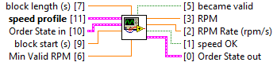
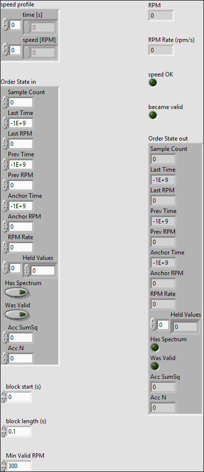
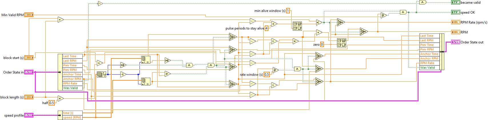

Order Analysis helper. Takes the speed points of OAT Analog Tacho Process for this block and returns RPM at the block centre (last speed point extrapolated with the slope of the last two points, clamped at 0), RPM Rate (rpm/s, slope over >= 0.5 s), speed OK (tach alive AND RPM >= Min Valid RPM) and became valid (rising edge of speed OK). Tach alive = last speed point younger than max(4 pulse periods, 1 s). Keeps its history in Order State (class data), no hidden state.


